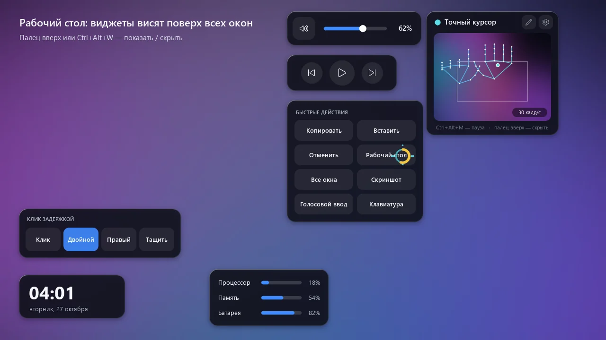

Виджеты прямо на экране
Громкость, музыка, часы, нагрузка компьютера и панель со своими кнопками плавают поверх всех окон. Нажимайте их щипком, как любую программу.
- Палец вверх или Ctrl+Alt+W — показать и спрятать
- Свои кнопки: сочетания клавиш, программы, сайты, файлы
- Не забирают фокус: клавиши уходят в вашу программу
